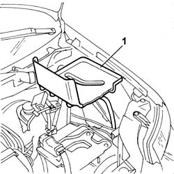

5530B56 BATTERY DRIP TRAY COVER - R.R.
- Path
- Procedures > 55 ELECTRICAL EQUIPMENT > 5530 CURRENT GENERATOR > 5530B battery and leads > 5530B56 BATTERY DRIP TRAY COVER - R.R.
- Kind
- repair procedure (removal / refitting; the operation number is the code)
- Applies to
- all engines; all production periods
- Interactive page
- https://sloeber94.github.io/elrnDB-fPnd/en/#/2752967
Applies to: all engines; all production periods
 Removing
Removing
 Refitting
Refitting1. Remove the battery cage cover from its seating on the cage.

Applies to: all engines; all production periods
Refitting
RemovingFit the battery cage cover in its seating.
Topics linked from this page (1)
Topics that link to this page (60)
- 0010T47 hydraulic system fluid for gearbox with hydraulic selection check level and top up if necessary
- 1004B12 power unit with manual gearbox - r+r for versions with a/c
- 1004B13 POWER UNIT WITH MECHANIC TRANSMISSION - R.R. FOR MODELS WITH AIR-CONDITIONER AND FOUR-WHEEL DRIVE
- 1016C10 SINGLE CYLINDER HEAD, REMOVED - OVERHAUL
- 1016C11 SINGLE CYLINDER HEAD-R R GASKET FOR VERSIONS WITH AIR CONDITIONER
- 1020D26 FLYWHEEL SIDE OIL SEAL COVER - R+R
- 1020D38 flywheel side oil seal - replace
- 1024B10 engine flywheel - r + r for versions with manual gearbox
- 1024B12 engine flywheels rr for versions with manual gearbox and air contioner
- 1024B13 ENGINE FLYWHEEL - R.R. FOR MODELS WITH MECHANIC TRANSMISSION AND FOUR-WHEEL DRIVE
- 1028H20 piston with connecting rod - r r
- 1028H21 piston with connecting rod - r r
- 1036B34 overhead camshaft rear cover - r + r and replace seals
- 1088C30 thermostat unit - r+r
- 1810A20 clutch - r + r
- 1810A28 clutch - r r for manual gearbox with hydraulic selection versions
- 1810A30 CLUTCH - R.R. FOR FOUR-WHEEL DRIVE MODELS
- 1820A19 THRUST BEARING CONTROL LEVERAGE - R.R. FOR FOUR-WHEEL DRIVE MODELS
- 1820A24 thrust bearing linkage - r + r
- 1820B45 RIGID DELIVERY PIPE FROM MASTER CYLINDER (PUMP) - R R FOR RHD VER SIONS
- 2110A10 manual gearbox and differential - r + r
- 2110A11 manual gearbox with differential - r r for versions with hydraulic selection
- 2110A16 MECHANICAL GEAR WITH DIFFERENTIAL - R.R. FOR 4X4 VERSIONS
- 2125C30 GEAR ENGAGEMENT CABLE - R R
- 2127C12 hydraulic gear selection fluid reservoir - r r
- 2127C18 pipe from hydraulic circuit fluid reservoir to hydraulic speed selection drive pump - r r
- 2127C20 pipe frompump to hydraulic speed selection actuator unit - r r
- 2127C22 pipe from hydraulic speed selection actuator unit to fluid reservoir - r r
- 2127C30 hydraulic speed selection system pump - r r
- 2127C40 hydraulic speed selection hydraulic actuator unit and clutch - r r
- 2127C44 pressure accumulator on hydraulic actuator unit - r r
- 2127C52 EVEN AND UNEVEN GEAR ENGAGEMENT SOLENOID VALVES - R.R.
- 2127C54 GEAR SELECTOR SOLENOID VALVES - R.R .
- 2127C56 CLUTCH SOLENOID VALVE - R.R.
- 2127E40 hydraulic selection gearbox speed selection position sensor - r r
- 2127E42 hydraulic selection gearbox shift position sensor - r r
- 2127E44 hydraulic selection gearbox clutch position sensor - r r
- 2127E50 hydraulic selection gearbox circuit pressure sensor - r r
- 2127E94 wiring for manual gearbox hydraulic selection system on hydraulic selection unit r r or change
- 3330C10 (PUMP) - MASTER CYLINDER R.R.
- 3330C14 (PUMP) - MASTER CYLINDER .R.R for versions with A.B.S.
- 3330D02 brake servo/brake pump assembly - r r
- 3330D10 brake servo - r+r - includes separation from master cylinder (pump)
- 3330D14 brake servo - r+r for versions with abs - includes separation from master cylinder (pump)
- 3330D23 REACTION ROD ON BRAKE SERVO MASTER CYLINDER R R FOR RHD VERSIONS
- 3330D70 IDLER SHAFT ON BRAKE SERVO R R FOR RHD VERSIONS
- 3330D74 IDLER SHAFT MOUNT ON BRAKE SERVO R R FOR RHD VERSIONS
- 3330E52 RIGID PIPE from master cylinder to LEFT front brake - R.R.
- 3330E53 RIGID PIPE from master cylinder to RIGHT front brake - R.R.
- 3340A12 A'B.S. system. - electronic and hydraulic CONTROL UNIT R.R.
- 3340A13 abs central mount - r r
- 3340B55 central brake pipe to lh - r r
- 3340B56 RIGID PIPE from hydraulic CONTROL UNIT to RIGHT FRONT BRAKE - R.R.
- 3340B62 rear connection central pipe - r r
- 5010A16 heater/engine line - r r
- 5510C10 ignition coil/s - r+r
- 5510C14 ignition coil/s - r+r
- 5520C20 Heater plugs CONTROL UNIT - R.R.
- 5530B52 Battery DRIP TRAY/SUPPORT - R.R.
- 5550D22 REVERSING LIGHT SWITCH - R+R